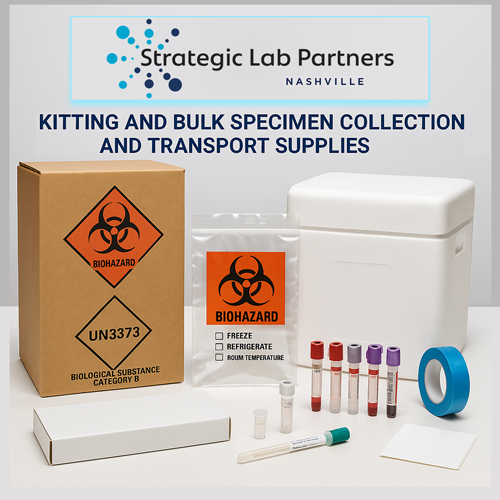

Kitting & Bulk Supplies for Healthcare Training

Purpose-Built Kits for Training Environments
Healthcare training programs depend on consistent, high-quality supplies to prepare clinicians, phlebotomists, laboratory technicians, and research coordinators for real-world practice. Whether the setting is a university simulation lab, a hospital onboarding program, or a clinical research training site, the supplies used during training must mirror what practitioners will encounter in the field.
Strategic Lab Partners designs and assembles training kits that replicate the exact components, packaging, and workflows used in active clinical and research environments. This approach ensures that trainees develop muscle memory and procedural confidence with the same specimen collection tubes, transport containers, labeling systems, and protective packaging they will use on the job.
What Goes Into a Healthcare Training Kit
Every training kit is purpose-built around the protocols it supports. A typical specimen collection training kit from SLP may include:
- Specimen collection tubes — color-coded vacutainers and microcontainers matched to the testing protocols being taught.
- Transport packaging — insulated shippers, cold chain materials, and UN3373-compliant biohazard containers for safe specimen transit.
- Labeling and documentation — pre-printed specimen labels, chain-of-custody forms, and requisition sheets that teach proper identification and tracking from the start.
- Personal protective equipment — gloves, absorbent materials, and biohazard bags that reinforce safe handling practices.
- Step-by-step instruction cards — visual guides and quick-reference materials that walk trainees through collection, packaging, and shipping procedures.
By assembling these components into a single, ready-to-use unit, SLP eliminates the procurement burden from training coordinators and ensures every trainee receives an identical, complete kit.
Bulk Supply Programs for Ongoing Training
Training is not a one-time event. Healthcare organizations run orientation cycles, continuing education sessions, and competency assessments throughout the year. SLP supports these ongoing needs through bulk supply programs that deliver consistent inventory on a predictable schedule.
Bulk programs cover the full range of consumable supplies used in training environments — from specimen collection consumables and transport materials to general laboratory supplies. By consolidating these items through a single procurement partner, organizations reduce vendor complexity, stabilize costs, and ensure that supply availability never becomes a bottleneck for training timelines.
SKU Consolidation
Many training programs inherit fragmented supply lists built up over years of ad-hoc purchasing. SLP works with training directors to consolidate redundant SKUs, standardize on preferred products, and streamline reorder workflows. Fewer SKUs means less inventory to manage, fewer purchase orders to process, and a more consistent training experience across cohorts and locations.
Temperature-Controlled and Compliant Shipping
Even in training contexts, supplies that require cold chain handling or hazardous materials compliance must be stored and shipped correctly. SLP applies the same temperature-controlled logistics and regulatory-compliant packaging to training supply shipments as it does to active clinical deployments, reinforcing proper handling from day one.
Scaling Across Multiple Training Sites
Large healthcare systems, CROs, and academic institutions often operate training programs across multiple locations. SLP's centralized kitting and fulfillment infrastructure ensures that every site receives identical kits with the same components, quantities, and quality standards — regardless of geography.
Through SLP CONNECT™, organizations gain real-time visibility into kit production status, shipment tracking, and inventory levels across all training locations. This centralized oversight eliminates the guesswork that comes with managing distributed supply chains and enables training coordinators to focus on instruction rather than logistics.
From Training to Deployment
The most effective training programs create a seamless bridge between the classroom and the field. When trainees learn on the same kits and supplies they will use in clinical practice, the transition from training to active duty is faster, errors are fewer, and compliance is stronger from the first day of deployment.
SLP designs its training kitting programs with this continuity in mind. The same precision manufacturing, serialized tracking, and quality controls that govern production kits are applied to training kits, ensuring consistency at every stage of the program lifecycle.
Why Organizations Choose SLP for Training Supplies
- Consistency: Every kit is assembled to the same specification, every time — across all sites and cohorts.
- Compliance: Training materials meet the same regulatory and quality standards as active-use supplies.
- Scalability: Bulk programs and centralized fulfillment support organizations of any size, from single-site programs to nationwide training networks.
- Visibility: SLP CONNECT™ provides real-time tracking and inventory management across all training locations.
- Reduced administrative burden: Consolidated procurement, standardized SKUs, and scheduled deliveries free training staff to focus on education.
Strategic Lab Partners brings the same operational discipline to training supply programs that it delivers to active clinical and research deployments. When the quality of training determines the quality of care, the supplies behind that training must be precise, reliable, and ready.